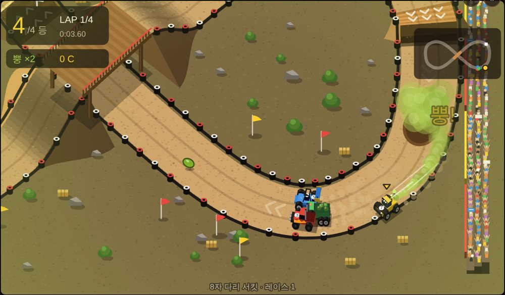
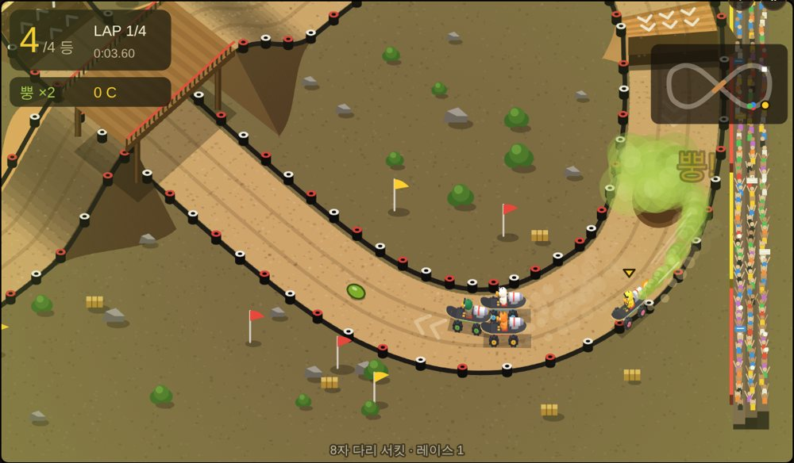

<title>슈퍼 D 2D 쇼룸</title>
<meta name="claude:viewport-fit-sides" content="cover">
<link rel="preconnect" href="https://fonts.googleapis.com">
<link rel="preconnect" href="https://fonts.gstatic.com" crossorigin>
<link rel="stylesheet" href="https://fonts.googleapis.com/css2?family=Black+Han+Sans&family=Gowun+Dodum&display=swap">
<style>
/* Layout: the 2D game's night-garage palette. Four turntable bays showing each racer as the sprite the game will actually draw (game size and zoomed), then before/after race shots and the full 32-direction sheet. Single dark look like the game. */
:root{
  --night:#1b1511;
  --panel:#2b211a;
  --panel-2:#3a2c21;
  --line:#5a4532;
  --ink:#fff4e2;
  --muted:#c9b597;
  --accent:#ffcf2e;
  --dirt:#b98e5a;
  --display:"Black Han Sans","Apple SD Gothic Neo","Malgun Gothic",sans-serif;
  --body:"Gowun Dodum","Apple SD Gothic Neo","Malgun Gothic",sans-serif;
  color-scheme:dark;
}
[hidden]{display:none!important}
html{background:var(--night)}
body{background:var(--night);color:var(--ink);font-family:var(--body);font-size:15px;line-height:1.6;margin:0}
.wrap{max-width:1100px;margin:0 auto;padding-left:max(16px,env(safe-area-inset-left,0px));padding-right:max(16px,env(safe-area-inset-right,0px));padding-block:26px 48px;display:flex;flex-direction:column;gap:26px}
h1,h2{font-family:var(--display);font-weight:400;margin:0;line-height:1.15;text-wrap:balance}
h1{font-size:clamp(30px,5.5vw,50px);color:var(--accent);text-shadow:0 4px 0 #8a5a00}
h2{font-size:26px}
p{margin:0}
.lede{color:var(--muted);max-width:66ch}
.eyebrow{font-family:var(--display);font-size:13px;letter-spacing:.08em;color:#a9cc4c}
.cta{align-self:flex-start;font-family:var(--display);font-size:20px;padding:12px 22px;border-radius:14px;background:var(--accent);color:#2b1d00;text-decoration:none;box-shadow:0 5px 0 #8a5a00}
.cta:focus-visible{outline:3px solid #a9cc4c;outline-offset:3px}
.bays{display:grid;grid-template-columns:repeat(4,minmax(0,1fr));gap:12px}
@media (max-width:820px){.bays{grid-template-columns:repeat(2,minmax(0,1fr))}}
.bay{background:var(--panel);border:2px solid var(--line);border-radius:16px;padding:12px;display:flex;flex-direction:column;gap:8px;min-width:0}
.bay .zoom{display:block;width:100%;aspect-ratio:1/1;max-width:100%;border-radius:12px;background:radial-gradient(ellipse at 50% 60%,#c9a06a,#a77c47)}
.bay .row{display:flex;align-items:center;gap:10px}
.bay .small{flex:0 0 auto;width:72px;height:72px;border-radius:10px;background:var(--dirt)}
.bay .name{font-family:var(--display);font-size:18px}
.bay .tag{font-size:12px;color:var(--muted)}
.chip{display:inline-block;width:12px;height:12px;border-radius:4px;margin-right:6px;vertical-align:-1px}
.pair{display:grid;grid-template-columns:1fr 1fr;gap:12px}
@media (max-width:820px){.pair{grid-template-columns:1fr}}
figure{margin:0;display:flex;flex-direction:column;gap:6px;min-width:0}
figure img{width:100%;max-width:100%;border-radius:14px;border:2px solid var(--line)}
figcaption{font-size:13px;color:var(--muted)}
.sheet{overflow-x:auto;border-radius:14px;border:2px solid var(--line);background:var(--dirt)}
.sheet canvas{display:block}
.note{font-size:13px;color:var(--muted)}
.notes{display:flex;flex-direction:column;gap:6px;margin:0;padding-left:20px}
</style>

<main class="wrap">
  <header style="display:flex;flex-direction:column;gap:12px">
    <p class="eyebrow">뿡뿡 랠리 · 2D 버전 차량 교체 테스트</p>
    <h1>2D 게임 속 슈퍼 D</h1>
    <p class="lede">3D 슈퍼 D 모델을 2D 게임 카메라 각도에서 32방향으로 찍어 그림(스프라이트)으로 만들었어요. 2D 게임은 차가 향하는 방향에 맞는 그림을 골라 그리기만 해서, 3D처럼 보이면서도 가볍게 돌아가요. 4대 모두 같은 슈퍼 D이고 도색과 운전 오리로 구분해요.</p>
    <a class="cta" href="game.html">실제 레이스에서 보기</a>
  </header>

  <section style="display:flex;flex-direction:column;gap:12px" aria-labelledby="t1">
    <h2 id="t1">레이서 4대</h2>
    <p class="note">왼쪽 아래 작은 칸이 게임 화면에서 실제로 보이는 크기예요. 큰 칸은 같은 그림을 확대한 거예요.</p>
    <div class="bays" id="bays"></div>
  </section>

  <section style="display:flex;flex-direction:column;gap:12px" aria-labelledby="t2">
    <h2 id="t2">바꾸기 전과 후</h2>
    <div class="pair">
      <figure><figcaption>지금 games.papertainer.com 버전 (도형으로 그린 트럭)</figcaption></figure>
      <figure><figcaption>슈퍼 D로 바꾼 버전 (같은 코스, 같은 순간)</figcaption></figure>
    </div>
  </section>

  <section style="display:flex;flex-direction:column;gap:12px" aria-labelledby="t3">
    <h2 id="t3">32방향 그림 한 장</h2>
    <p class="note">내 차(노랑 오리)의 32컷이에요. 게임은 차가 향하는 각도에 가장 가까운 컷을 골라 그려요.</p>
    <div class="sheet"><canvas id="sheet" aria-label="노랑 슈퍼 D 32방향 스프라이트"></canvas></div>
  </section>

  <section style="display:flex;flex-direction:column;gap:8px" aria-labelledby="t4">
    <h2 id="t4">알아둘 점</h2>
    <ul class="notes">
      <li>게임 규칙, 코스, 음악, 저장 기록은 그대로예요. 이 테스트 버전은 저장을 따로 해요.</li>
      <li>차고의 업그레이드 변신 그림은 아직 슈퍼 D에 맞춰 만들지 않았어요. 차고에는 내 슈퍼 D가 돌아가는 모습만 나와요.</li>
      <li>정식으로 넣을 때는 그림을 미리 PNG로 만들어 두면, 3D 엔진 없이 2D 게임만으로 돌아가요. 지금은 쇼룸을 위해 페이지를 열 때 바로 만들어요.</li>
    </ul>
  </section>
</main>

<script src="https://cdnjs.cloudflare.com/ajax/libs/three.js/r128/three.min.js"></script>
<script src="superd-baker.js"></script>
<script>
(() => {
'use strict';
const RACERS=[
  {name:'나',tag:'노랑 오리 · 하늘색 테두리',color:'#ffcf2e',p:{duck:'#ffd93b',wing:'#f0b400',head:'#ffd93b',deck:'#2fa3c9',deck2:'#2286a8',panel:'#f4f1ea',wheel:'#ff8fb1',wheel2:'#ff5a8a'}},
  {name:'불꽃 오리',tag:'주황 오리 · 빨강 테두리',color:'#e8483b',p:{duck:'#ff9a3d',wing:'#e8701a',head:'#ff8a2a',deck:'#e8483b',deck2:'#b83228',panel:'#f4f1ea',wheel:'#ffc83d',wheel2:'#e0a020'}},
  {name:'하늘 오리',tag:'흰 오리 · 파랑 테두리',color:'#3a8ee8',p:{duck:'#fff8ea',wing:'#e9dfc8',head:'#fff8ea',deck:'#3a8ee8',deck2:'#2a6db6',panel:'#2b2622',wheel:'#7fd3ff',wheel2:'#3aa0e0'}},
  {name:'청둥 오리',tag:'청둥 오리 · 초록 테두리',color:'#4fbf5a',p:{duck:'#8c7a62',wing:'#6b5a46',head:'#1f7a4a',deck:'#4fbf5a',deck2:'#3a9a46',panel:'#f4f1ea',wheel:'#7cc45a',wheel2:'#4f9a3a'}},
];
const bays=document.getElementById('bays');
if(!window.THREE||!window.makeSuperDBaker){bays.innerHTML='<p class="note">3D 엔진을 불러오지 못해서 그림을 만들 수 없어요. 새로고침해 주세요.</p>';return;}
let baked;
try{ const bk=makeSuperDBaker(); baked=RACERS.map(r=>bk.bake(r.p)); }
catch(e){ bays.innerHTML='<p class="note">이 기기에서는 그림을 만들 수 없어요(WebGL 필요).</p>'; return; }
bays.innerHTML=RACERS.map((r,i)=>`<div class="bay"><canvas class="zoom" id="z${i}" aria-label="${r.name} 확대"></canvas>
  <div class="row"><canvas class="small" id="s${i}" aria-label="${r.name} 게임 크기"></canvas><div><div class="name"><span class="chip" style="background:${r.color}"></span>${r.name}</div><div class="tag">${r.tag}</div></div></div></div>`).join('');
const SDW=64, SDH=Math.round(64/0.766);
function frame(S,a){const t=((a%(Math.PI*2))+Math.PI*2)%(Math.PI*2);return Math.round(t/(Math.PI*2)*S.FRAMES)%S.FRAMES;}
function fitCanvas(c){const r=c.getBoundingClientRect(),d=Math.min(2,window.devicePixelRatio||1);const w=Math.round(r.width*d),h=Math.round(r.height*d);if(c.width!==w||c.height!==h){c.width=w;c.height=h;}return d;}
// full sheet
{const S=baked[0],c=document.getElementById('sheet');c.width=S.atlas.width;c.height=S.atlas.height;c.style.width=(S.atlas.width/2)+'px';c.style.height=(S.atlas.height/2)+'px';c.getContext('2d').drawImage(S.atlas,0,0);}
const reduce=matchMedia('(prefers-reduced-motion: reduce)').matches;
let t0=performance.now();
function tick(now){
  const ang=reduce?0.6:(now-t0)/1000*0.9;
  baked.forEach((S,i)=>{const k=frame(S,ang),sx=(k%S.COLS)*S.CELL,sy=Math.floor(k/S.COLS)*S.CELL;
    for(const [id,scale] of [['z'+i,0],['s'+i,1]]){const c=document.getElementById(id);if(!c)continue;const d=fitCanvas(c),g=c.getContext('2d');
      g.setTransform(1,0,0,1,0,0);g.clearRect(0,0,c.width,c.height);
      const w=scale?SDW*d:c.width*0.95,h=w*SDH/SDW;
      g.fillStyle='rgba(0,0,0,.22)';g.beginPath();g.ellipse(c.width/2,c.height/2+h*0.08,w*0.34,w*0.13,0,0,7);g.fill();
      g.drawImage(S.atlas,sx,sy,S.CELL,S.CELL,c.width/2-w/2,c.height/2-h/2,w,h);}});
  requestAnimationFrame(tick);
}
requestAnimationFrame(tick);
})();
</script>
